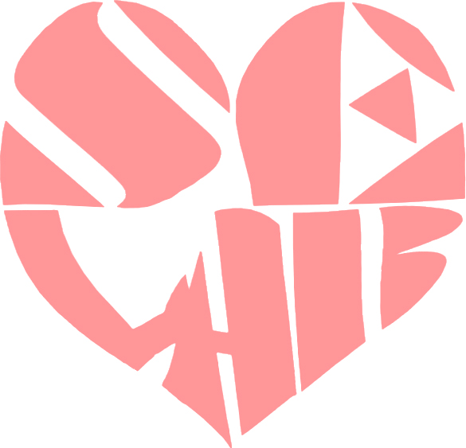

0 Research Publications
0 Completed Projects
Master's student at Korea University and visiting researcher at the University of Oxford, Kellogg College. My research focuses on digital image forensics, particularly the authenticity of AI-generated and manipulated images and image manipulation localisation.
GPA [ 4.21 / 4.5 ]
GPA [ 4.15 / 4.5 ]
Research interests include the authenticity and integrity of AI-generated and AI-manipulated images, with a focus on understanding and evaluating image manipulation localisation methods.
Participating in a six-month cybersecurity programme delivered by Kellogg College in partnership with Korea University, combining Oxford-led teaching, interactive discussions and a collaborative capstone project. The programme provides opportunities to engage with contemporary cybersecurity challenges in an interdisciplinary academic setting.

This study empirically investigates how ambiguities in ZIP file structures affect parsing consistency and the reliability of digital forensic tools. We designed test cases involving filename boundaries and case-sensitivity rules, and compared parsing results across four forensic tools. The findings highlight inconsistencies in file recognition, directory structures, and accessibility, with implications for evidential reproducibility and completeness.
This paper introduces SCI.Q, a science-focused question-and-answer platform designed to improve access to reliable information. The system combines general discussion and specialist communities, offers AI-generated initial responses, and supports source attribution, tagging, and community participation.
This study analyses footfall patterns at Osaek Market in Osan using K-means clustering and proposes revitalisation strategies. The analysis suggests that festivals and market days can increase visitor activity, informing targeted marketing and local business initiatives.
This paper presents a personalised travel community application with photo EXIF and GPS-based location verification, filters for travel themes and conditions, and a Flutter-based cross-platform implementation for iOS and Android.
This work proposes an AI-assisted approach to monitoring dementia-related changes through everyday conversations. It explores the analysis of individual speech patterns to support early observation and personalised monitoring.
We present the design and implementation of a wearable physical activity verification method using smart glasses and smartwatches. Our aim is to provide an in-depth analysis of the benefits and challenges associated with this approach. The benefits highlighted include improved accuracy and reliability in tracking physical activity, a better understanding of user behavior, enhanced user experience, and the versatility of the devices. However, the potential problems discussed include the cost of these devices, privacy concerns related to data collection, and potential discomfort for users during extended wear. To address these challenges, we emphasize the importance of considering additional verification methods, ensuring data security measures, and monitoring user feedback to refine the design. Ultimately, our work contributes to the field of HCI by showcasing the potential of wearable devices in tracking physical activity, and by highlighting the factors that should be considered to optimize user experience and data collection.
This paper designs and implements Wear OS watch faces and complications for children and parents. The interfaces support child-friendly activities and convenient access to family-related information and functions.
| Certification | Date | Issuer | Score | Notes |
|---|---|---|---|---|
| DIAT PowerPoint | 2012.06.15 | Korea Association for ICT Promotion | 165/200 (Advanced) | |
| DIAT Spreadsheet | 2012.09.14 | Korea Association for ICT Promotion | 200/200 (Advanced) | |
| ITQ OA MASTER | 2015.03.09 | Korea Productivity Center | - |
① Hangul Word Processor ② Excel ③ PowerPoint ④ Internet |
| GTQ (Graphic Technology Qualification), Level 1 | 2016.12.28 | Korea Productivity Center | - | |
| e-Test Professionals | 2017.01.07 | e-Test Professionals | - |
① Excel ② Word ③ PowerPoint |
| Network Administrator, Level 2 | 2022.12.13 | Korea Information and Communication Qualification Association | - | |
| Microsoft PowerPoint (Office 2016) |
2024.06.21 | YBM IT | 800/1000 (Passed) | |
| Microsoft Word Expert (Office 2016) |
2024.06.21 | YBM IT | 888/1000 (Passed) | |
| Microsoft Excel Expert (Office 2016) |
2024.06.23 | YBM IT | 820/1000 (Passed) | |
| Microsoft Access (Office 2016) |
2024.06.25 | YBM IT | 908/1000 (Passed) | |
| Engineer Information Processing | 2026.09.11 | Human Resources Development Service of Korea (HRDK) | - | National Technical Qualification (fully certified) |
Jungnang-gu, Seoul